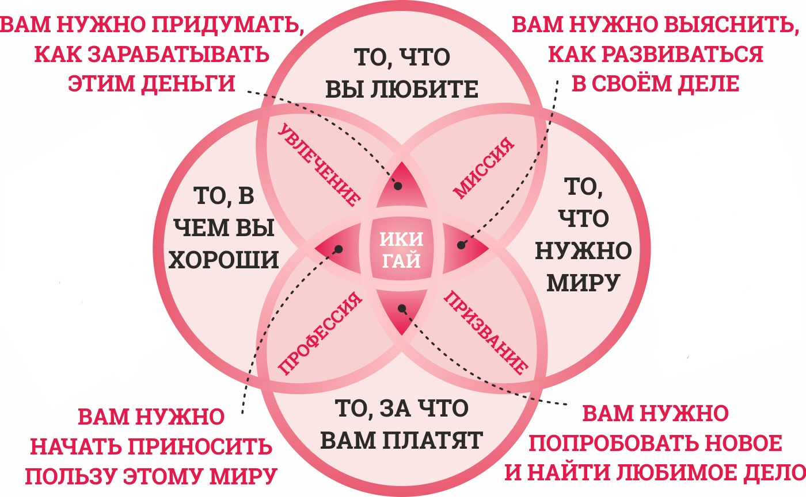
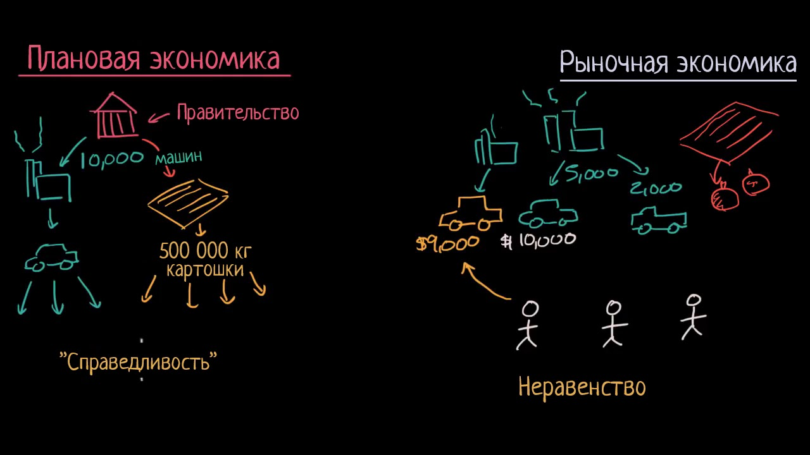

Программист
ГолосоватьПочему "Выбор профессии" разрушает жизнь 80% выпускников школ?
Статистика - вещь упрямая...
Одно из самых важных решений, которые человек принимает в своей жизни это выбор профессии и карьерного пути, который определит качества всей дальнейшей жизни. К сожалению, очень часто подобный выбор совершается без должного обдумывания, на уровне интуиции или сиюминутных желаний и увлечений.
Какое же количество выпускников используют свое образование и работают по специальности? На сайте «Работа в Харькове» было проведено исследование с целью ответить на этот вопрос.
Основние причины, почему выпускники ВУЗов не работают по специальности:
Таким образом, можно сделать вывод, что еще до поступления в ВУЗ, люди очень мало знали о своей будущей профессии. Какой алгоритм действий приводит будущего выпускника к таким последствиям?
Алгоритм, что движет вами
Если школьник хочет определится, кем ему работать в будущем, то со 100% вероятностью полезет в Интернет, ведь это самый большой источник информации в наше время. В процессе поиска, он наткнётся на сайты, которые в той или иной степени показывают алгоритм, основаный на японской технике Икигай.

На сайтах по профориентации выделяются всего 3 составляющие: Хочу-Могу-Надо.
- Хочу: Интересы, склонности, мотивы, планы, профессиональные намерения, это то занятие, которое делается с интересом, с желанием, по собственной инициативе.
- Могу: Возможности личности, то есть, состояние здоровья, имеющийся опыт (знания, умения, навыки), психофизиологические качества, способности к различным видам деятельности.
- Надо: Потребности общества, то есть, представление об обязаности, нравственные установки, ценностные ориентации, знание мира профессий и о перспективных специальности, которые пользуются спросом на рынке труда, и вероятность трудоустройства по выбранной профессии.
Посетитель сайта получает алгоритм, который сводит его к поиску ответов на данные вопросы: Что я хочу? Что я могу? Что требуется на рынке? В конце концов посредством походов к специалистам, профориентационным тестам, вы определяетесь, сделая компромиссное решение, как-то удоблетворяющее 3-м состовляющим. Такой алгоритм похож на выбор одежды в супермаркете, вы будто осматриваете вещицу, меряете. Следуя этому алгоритму, вы не имеете чёткого плана действий при неправильном выборе.
Мир очень быстро меняется, но по такому плану действий вы абсолютно не адаптируетесь к этим изменениям, а просто выбираете!
Наш алгоритм
Шаг №1: Базовые способы зарабатывания денег
Узнайте про базовые способы зарабатывания денег. Это поможет просмотреть альтернативные варианты при выборе профессии и получении дальнейшей работы
Записаться на вебинарШаг №2: Базовые принципы рыночной экономики. Конкуренция

Вы должны выработать навык конкуренции, ведь мир безпрерывно меняется
Записаться на вебинарШаг №3: Механизмы формирования команды. Алгоритмы принятия кадровых решений
Алгоритмы принятия кадровых решений играет важную роль для вас. Вы должны уметь продать себя и свои умения
Записаться на вебинарЧасто допускаемые ошибки при выборе профессии
Устойчивое суждения о престижности профессии
Если современном тинейджеру поставить выбор между фрезеровщиком и психологом - очевидно, выбор падет на второй вариант. Это стандартный шаблон мышления, который навязывает нам общественное мнение, видимо клише, которое ассоциативно закрепляется за определенным кругом, так сказать "не модных» профессий. Спрос на рынке профессий, навеянный сегодняшним днем, конечно, стоит учитывать, но куда важнее прислушиваться и учитывать собственное мнение, интересы и предпочтения.
Нежелание разобраться в себе
Определить сильные и слабые стороны помогут не только психологи, но и друзья, родственники. Но даже наличие навыков не является гарантией освоение профессии, если у человека имеются прямые противопоказания. Например, в летчики не берут людей со слабым сердцем.
Знание только об одной стороне профессии
По легкости, с которой актер создает на сцене образ, стоит упорный ежедневный труд. А журналисты не всегда выступают в телепередачах. Чаще они прорабатывают большое количество информации, архивов, разговаривают с десятками людей, перед тем как подготовить 10-минутное сообщение, которое к тому же озвучит кто-то другой (диктор на телевидении).
Влияние других людей на выбор
Существует устойчивое мнение, что окружение формирует человека. Хорошо, когда это окружение состоит из самодостаточных индивидуумов с достойным собственным примером успешного человека. Когда дело идет о таких же подростков, как и ты, вряд ли выбор профессии становится глубоко продуманной акцией. Скорее всего, это просто решение, принятое «за компанию». Стоит помнить, что профессию ты подбираешь для себя, а не для какой-то другого человека.
Отношение к выбору профессии как к неизменной
У многих абитуриентов всегда имеет место страх. Этот страх касается рассуждений на тему: «Выбор здесь и сейчас определит направление деятельности на всю мою дальнейшую жизнь, и я ничего уже не смогу изменить». Но в наше время все больше ценятся многопрофильные специалисты, поэтому не стоит останавливаться на первой, а следует и в дальнейшем развивать и совершенствовать себя. Никто не знает, как повернется жизнь: возможно, именно та, первая, ненавистная профессия - в трудную минуту прокормит вас.
Профессии
Если вы хотите по-больше узнать про разные профессии, то у нас для вас хорошие новости! Мы проводим онлайн-голосование, где вы можете решить, сделать ли описание той или иной профессии. Сделайте свой выбор